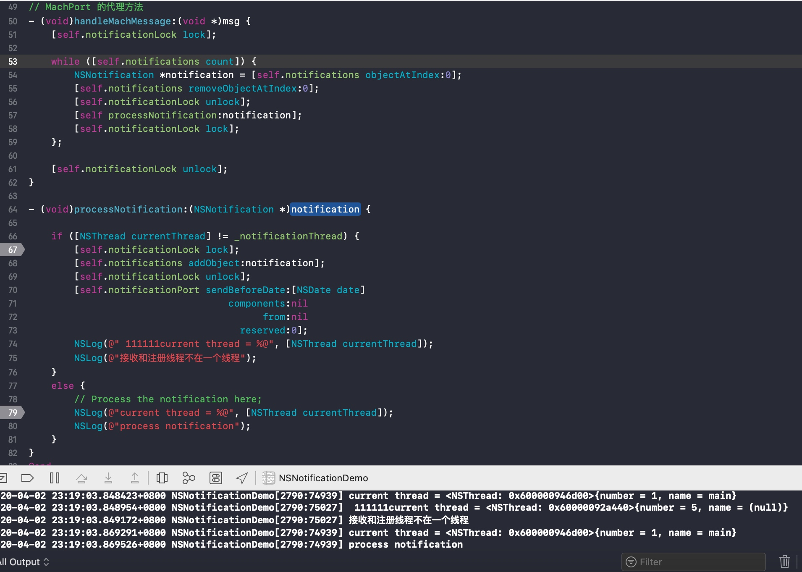

关于观察者的移除
iOS9 以后的版本,不需要在 - dealloc 方法对观察者手动的移除了,因为在对象或者 ViewController 在释放 -dealloc 的时候,会自动的调用 [[NSNotificationCenter defaultCenter]removeObserver:self] 方法.
在 iOS9 之前的版本需要我们在 dealloc 方法中手动的调用移除观察者的方法,因为在 iOS9 之前的版本中,在注册观察者的时候,通知中心并不会对观察者做 retain 操作,而是对观察者进行 unsafe_unretained 的引用,这里需要说明为什么是 unsafe_unretained 而不是 weak 的引用,因为 Cocoa 和 Cocoa Touch 中的一些类还没有支持 ARC,也就是不支持 weak,为了兼容之前的版本,所以这里使用了unsafe_unretained的引用,因为unsafe_unretained在释放的时候并不会自动置为 nil,所以有可能造成野指针,因此需要我们手动移除观察者.
需要注意的是,通过 [NSNotificationCenter addObserverForName:object:queue:usingBlock] 方法注册的观察者,即使在 iOS9 之后,依然需要我们手动移除观察者,因为通知中心对他们的持有是强引用
通知与线程
NSNotification在多线程下的转发问题,官方文档的说法:
In a multithreaded application, notifications are always delivered in the thread in which the notification was posted, which may not be the same thread in which an observer registered itself.
翻译过来就是:
在多线程应用中，Notification在哪个线程中post，就在哪个线程中被转发，而不一定是在注册观察者的那个线程中。
这也就是说 Notification 的发送和接收处理是在同一个线程中.
那么问题来了,假如我们在异步线程 POST 了一个通知,但是我们希望是在主线程中处理(比如是网络回调结束之后,刷新 UI),这个时候怎么办?
看下官方文档的描述:
For example, if an object running in a background thread is listening for notifications from the user interface, such as a window closing, you would like to receive the notifications in the background thread instead of the main thread. In these cases, you must capture the notifications as they are delivered on the default thread and redirect them to the appropriate thread.
这里讲到了“重定向”，就是我们在Notification所在的默认线程中捕获这些分发的通知，然后将其重定向到指定的线程中。
一种重定向的实现思路是自定义一个通知队列(注意，不是NSNotificationQueue对象，而是一个数组)，让这个队列去维护那些我们需要重定向的Notification。我们仍然是像平常一样去注册一个通知的观察者，当Notification来了时，先看看post这个Notification的线程是不是我们所期望的线程，如果不是，则将这个Notification存储到我们的队列中，并发送一个信号(signal)到期望的线程中，来告诉这个线程需要处理一个Notification。指定的线程在收到信号后，将Notification从队列中移除，并进行处理
官方文档 给出了代码,我们测试一下
@interface ViewController () <NSMachPortDelegate>
@property (nonatomic) NSMutableArray *notifications; // 通知队列
@property (nonatomic) NSThread *notificationThread; // 期望线程
@property (nonatomic) NSLock *notificationLock; // 用于对通知队列加锁的锁对象，避免线程冲突
@property (nonatomic) NSMachPort *notificationPort;
@end
@implementation ViewController
- (void)viewDidLoad {
[super viewDidLoad];
NSLog(@"current thread = %@", [NSThread currentThread]);
// 初始化
self.notifications = [[NSMutableArray alloc] init];
self.notificationLock = [[NSLock alloc] init];
self.notificationThread = [NSThread currentThread];
self.notificationPort = [[NSMachPort alloc] init];
self.notificationPort.delegate = self;
// 往当前线程的runloop添加端口源
// 当Mach消息到达而接收线程的run loop没有运行时，则内核会保存这条消息，直到下一次进入run loop
[[NSRunLoop currentRunLoop] addPort:self.notificationPort
forMode:(__bridge NSString *)kCFRunLoopCommonModes];
[[NSNotificationCenter defaultCenter] addObserver:self selector:@selector(processNotification:) name:@"TestNotification" object:nil];
dispatch_async(dispatch_get_global_queue(DISPATCH_QUEUE_PRIORITY_DEFAULT, 0), ^{
[[NSNotificationCenter defaultCenter] postNotificationName:@"TestNotification" object:nil userInfo:nil];
});
}
// MachPort 的代理方法
- (void)handleMachMessage:(void *)msg {
[self.notificationLock lock];
while ([self.notifications count]) {
NSNotification *notification = [self.notifications objectAtIndex:0];
[self.notifications removeObjectAtIndex:0];
[self.notificationLock unlock];
[self processNotification:notification];
[self.notificationLock lock];
};
[self.notificationLock unlock];
}
- (void)processNotification:(NSNotification *)notification {
if ([NSThread currentThread] != _notificationThread) {
[self.notificationLock lock];
[self.notifications addObject:notification];
[self.notificationLock unlock];
[self.notificationPort sendBeforeDate:[NSDate date]
components:nil
from:nil
reserved:0];
NSLog(@" 111111current thread = %@", [NSThread currentThread]);
NSLog(@"接收和注册线程不在一个线程");
}
else {
// Process the notification here;
NSLog(@"current thread = %@", [NSThread currentThread]);
NSLog(@"process notification");
}
}
@end
运行之后我们看下打印结果:

一开始接收到通知的时候,确实不在一个线程,所以添加到了数组中,并且发送了一个端口消息,然后在 MachPort 的代理方法中处理这个消息,最终在主线程接收到了这个通知.
当然，更好的方法可能是我们自己去子类化一个NSNotificationCenter，或者单独写一个类来处理这种转发。